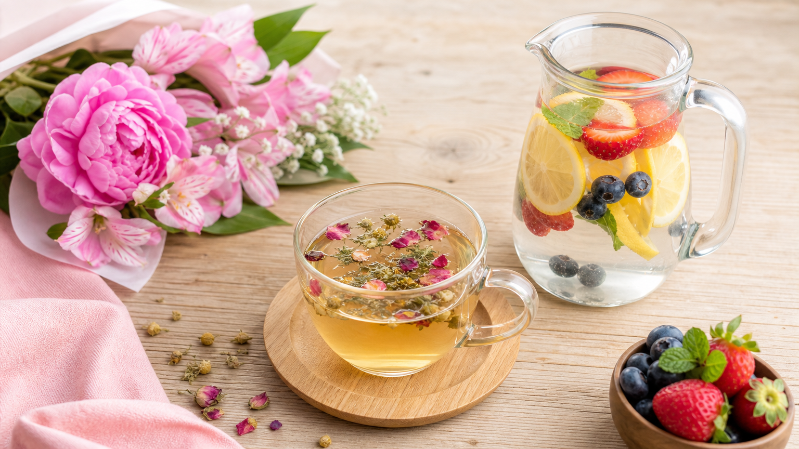

「お酒をやめたら痩せるって本当？」「50代でも禁酒ダイエットの効果はある？」——そんな疑問にズバリお答えします。
結論から言うと、禁酒は50代女性のダイエットに相性がいい習慣のひとつです。カロリーを減らせるだけでなく、むくみや睡眠の質にも関係しているため、体の変化を感じやすいと言われています。
この記事では、禁酒ダイエットの仕組みから、1ヶ月間の実践ステップ、続けるためのコツまでを具体的に紹介します。
なぜ禁酒が50代女性のダイエットに効果的なの？
① アルコールのカロリーは意外と多い
お酒のカロリーは「エンプティカロリー（空のカロリー）」とも呼ばれ、栄養素がほぼなくカロリーだけを摂取します。
たとえば缶ビール（350ml）は約140〜150kcal、グラスワイン（120ml）は約90kcal。毎晩飲めば、週に約700〜1,000kcalのプラスになります。
② アルコールは脂肪燃焼を一時的に妨げる
体はアルコールを優先的に分解しようとするため、その間は脂肪の燃焼が後回しになります。禁酒することで、この「燃焼ストップ」の時間をなくすことができます。
③ 50代はホルモン変化でむくみやすい
更年期以降はエストロゲンの減少により、水分バランスが乱れやすくなります。アルコールには利尿作用と同時に体内の水分バランスを崩す作用もあるため、禁酒するとむくみが落ち着いたと感じる方が多いです。
④ 睡眠の質が上がり、代謝が整いやすくなる
アルコールは寝つきをよくする一方で、睡眠の後半の質を下げることが知られています。睡眠の質が上がると成長ホルモンの分泌が安定し、体の修復・代謝に好影響をもたらします。
🍷 禁酒ダイエット｜1ヶ月タイムライン（50代女性）
週ごとに起きやすい体の変化と期待できる効果
禁酒ダイエット｜1ヶ月の始め方ステップ
ステップ1：まず「週2日の休肝日」から始める（1〜2週目）
いきなり完全禁酒は続かないことも。最初の1〜2週間は「月曜と木曜はお酒を飲まない」など、曜日を決めた休肝日から始めましょう。
週2日の休肝日だけで、1週間あたり約300〜400kcalのカットが期待できます。
ステップ2：代替ドリンクを3種類用意する（2週目〜）
「飲みたい」という気持ちを別のもので満たすことが続けるカギです。おすすめの代替ドリンクを3つ紹介します。
- 🍵 ノンカフェインハーブティー（カモミール・ルイボスなど）：リラックス効果があり、夜の習慣に馴染みやすい
- 🫧 炭酸水＋レモン・ライム：シュワシュワ感がビールの代わりになりやすい
- 🍹 フルーツウォーター：見た目もきれいで「特別感」を演出できる
ステップ3：夜の「飲む時間帯」を別の習慣で埋める（3週目〜）
お酒を飲む時間帯に別の行動を入れることで、「飲みたい」という習慣的な衝動が薄れていきます。
たとえば「夜9時になったらストレッチをする」「入浴後にハーブティーを飲む」など、5〜10分でできる小さな行動を1つ決めるだけでOKです。
ステップ4：週1回、体の変化を記録する（全期間）
体重・むくみ感・睡眠の深さ・肌の調子など、数字以外の変化もメモしておきましょう。「体重は変わらなくてもむくみが取れた」という変化が、続けるモチベーションになります。
食事全体の見直しも一緒に行いたい方は、ダイエット向け1週間の食事献立プランも参考にしてみてください。
禁酒中に気をつけたい「食べすぎ」の落とし穴
禁酒を始めると、お酒の代わりに甘いものや炭水化物を多く食べてしまうケースがあります。これは血糖値の変動や「口寂しさ」が原因のことが多いです。
対策として、以下の3点を意識しましょう。
- 夕食後の間食ゾーンを決める：「夜9時以降は食べない」など時間のルールを1つ設ける
- 甘い飲み物に注意：ジュースや甘いノンアルコール飲料はカロリーが高いものも多い。炭酸水やお茶を基本にする
- たんぱく質を意識的に摂る：豆腐・卵・鶏むね肉など、満足感が続く食材を夕食に取り入れる
50代女性が禁酒を続けやすくなる3つのコツ
① 「完全禁酒」より「量を減らす」発想でOK
月に1〜2回の特別な機会にお酒を楽しむ「セミ禁酒」スタイルでも、週5〜7日飲んでいた頃と比べれば大きな変化があります。完璧を目指さないことが長続きの秘訣です。
② 「なぜ禁酒したいか」を紙に書く
「むくみを取りたい」「朝すっきり起きたい」「体重を2kg落としたい」など、具体的な理由を書いておくと、飲みたくなったときの踏みとどまる力になります。
③ 同じ目標を持つ仲間やSNSを活用する
禁酒チャレンジをSNSで発信したり、友人と「一緒に1ヶ月やってみよう」と声をかけ合うと、継続率が上がります。1人で抱え込まないことが大切です。
習慣づくりに悩んでいる方は、ダイエットが続かない女性のための習慣改善ヒントもあわせてご覧ください。
よくある質問
Q. 禁酒ダイエットで1ヶ月に何kg痩せられますか？
個人差が大きいため「必ず○kg痩せる」とは言えませんが、毎晩缶ビール1本（約150kcal）を飲んでいた場合、1ヶ月の禁酒で約4,500kcalの削減になります。体脂肪1kgは約7,200kcalに相当するため、食事内容が変わらなくても0.5〜0.6kg程度の変化が期待できる計算です。むくみが取れることで、体重以上に「見た目のスッキリ感」を感じる方も多いです。
Q. ノンアルコールビールに切り替えるだけでも効果はありますか？
ノンアルコールビールはアルコールを含まないため、アルコールによる脂肪燃焼の妨げや睡眠への影響は避けられます。ただし、商品によっては糖質・カロリーが含まれるものもあるため、「糖質ゼロ」「カロリーゼロ」と表示されているものを選ぶのがおすすめです。完全禁酒が難しい方の第一歩として有効な選択肢です。
Q. 禁酒するとストレスが増えて逆効果にならないですか？
「お酒でストレス発散していた」という方は、禁酒直後に物足りなさを感じることがあります。そのため、代替のリラックス習慣（ハーブティー・入浴・軽いストレッチなど）を同時に取り入れることが大切です。最初から「完全禁酒」を目指さず、週2〜3日の休肝日から始めると、ストレスなく移行しやすくなります。
禁酒ダイエットは、特別な食事制限や運動をしなくても始められるシンプルな習慣です。50代の体の変化に合わせて、無理なく取り組める方法を選んでみてください。
食事全体の管理も一緒に見直したい方は、食事管理の記事一覧もぜひ参考にしてみてください。